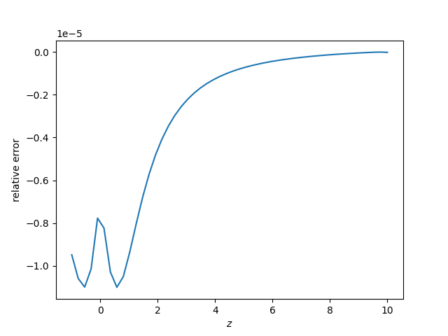

Note
Click here to download the full example code
B-field on the symmetry axis of a disc¶
Compare a analytic expression and the numerical computation of the B-field of a symmetric current distribution
import numpy as np
import matplotlib.pyplot as plt
import trimesh
from mayavi import mlab
from bfieldtools.mesh_magnetics import magnetic_field_coupling
from bfieldtools.mesh_conductor import MeshConductor, StreamFunction
from bfieldtools.utils import load_example_mesh
def field_disc(z, a):
""" Bfield z-component of streamfunction psi=r**2 z-axis
for a disk with radius "a" on the xy plane
"""
coeff = 1e-7
field = -2 * (a ** 2 + 2 * z ** 2) / np.sqrt((a ** 2 + z ** 2)) + 4 * abs(z)
field *= coeff * 2 * np.pi
return field
# Load disc and subdivide
disc = load_example_mesh("unit_disc")
for i in range(4):
disc = disc.subdivide()
disc.vertices -= disc.vertices.mean(axis=0)
# Stream functions
s = disc.vertices[:, 0] ** 2 + disc.vertices[:, 1] ** 2
Np = 50
z = np.linspace(-1, 10, Np) + 0.001
points = np.zeros((Np, 3))
points[:, 2] = z
mlab.triangular_mesh(*disc.vertices.T, disc.faces, scalars=s, colormap="viridis")
mlab.points3d(*points.T, scale_factor=0.1)
bfield_mesh = magnetic_field_coupling(disc, points, analytic=True) @ s
Out:
Computing magnetic field coupling matrix analytically, 18553 vertices by 50 target points... took 1.15 seconds.
Nr = 100
drs = np.linspace(-0.0035, -0.0034, Nr)
from matplotlib import cm
colors = cm.viridis(np.linspace(0, 1, Nr))
err = []
for c, dr in zip(colors, drs):
err.append(
(abs((bfield_mesh[:, 2] - field_disc(z, 1 + dr)) / field_disc(z, 1 + dr)))[-1]
)
plt.plot(1 + drs, err)
plt.ylabel("error")
plt.xlabel("disc radius")
Out:
Text(0.5, 0, 'disc radius')
plt.figure()
# Solve zero-crossing
pp = np.polyfit(drs[:30], err[:30], deg=1)
dr0 = -pp[1] / pp[0]
plt.semilogy(z, -field_disc(z, 1 + dr0))
plt.semilogy(z, -bfield_mesh[:, 2])
plt.xlabel("$z$")
plt.ylabel("$B_z$")
plt.figure()
# Plot the relative error
plt.plot(z, (abs(bfield_mesh[:, 2] - field_disc(z, 1 + dr0)) / field_disc(z, 1 + dr0)))
plt.xlabel("$z$")
plt.ylabel("relative error")
- 
Out:
Text(0, 0.5, 'relative error')
Total running time of the script: ( 0 minutes 3.260 seconds)
Estimated memory usage: 395 MB